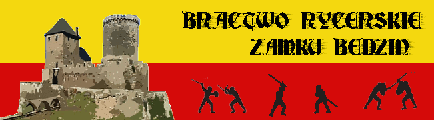

Najbli¿sze wydarzenia
- I Halowy Puchar Polski w fechtunku ¶redniowiecznym (15 styczeñ)
Chc±c urozmaiciæ "sezon zimowy" oraz przyczyniæ siê do rozwoju turniejów w Polsce zapraszamy na "I Zimowy Puchar Polski w Fechtunku Historycznym". Jest to doskona³a okazja do sprawdzenia siê poza sezonem i oceny nad czym jeszcze trzeba popracowaæ dla zaawansowanych zawodników oraz nabrania do¶wiadczenia przed sezonem letnim dla pocz±tkuj±cych walcz±cych. W ramach pucharu odbêd± siê równie¿ warszaty treningowe, prowadzone przez Marcina Waszkielisa i Emila Guza, na których bêdzie mo¿na siê zapoznaæ z metodami treningowymi, lizn±æ trochê techniki i potrenowaæ w ogólnopolskim gronie. "I Zimowy Puchar Polski w Fechtunku Historycznym" odbêdzie siê 15.01.2011 w Warszawie, na hali sportowej przy metrze S³u¿ew (ul. Wa³brzyska, Szko³a Podstawowa nr 46), start o godzinie 11:30. Informacje
December 26th, 2010 by Emil Guz, Emil z Gi¿ycka
- X Rocznica powstania Bractwa Rycerskiego Zamku Bêdzin(5 luty)
W tym roku ¶wiêtujemy 10 rocznicê powstania naszego Bractwa. Tradycyjnie ju¿ zaplanowana jest huczna czê¶æ oficjalna i o wiele bardziej huczna czê¶æ nieoficjalna...
December 26th, 2010 by Bractwo
- InterGalaktyczny Turniej Dru¿ynowy (halowy)(12 luty)
Witam w lutym najprawdopodobniej 10-12 (drugi ³ykend) odbedzie siê I turniej zimowy Nowej ERY w dru¿ynowych walkach rymcerskich czyli 5 na 5 czekam na potwierzdenie Sali na której ma siê on odbyæ ( miejsce do spania jest ju¿ wstêpnie zaklepane) miejsce : Zduñska Wola regulamin walki : taki jak na ostaniej Bia³orusi ( czyli to samo co na BN z ma³ymi modyfikacjami) bêd± sk³adki aby zap³aciæ za salê bêd± tak¿e nagrody ( na razie nad tym pracujê ; szczegó³y wkrótce) zg³oszenia dru¿yn ( min 8 osób ): na ua25@wp.pl warto przyjechaæ i pokazaæ siê przed BN bêdzie obecny piêkny pan Kapitan polskiej kadry sp.... znaczy buhurtowej Informacje
December 26th, 2010 by Adam Urbaniak, UA
- I Halowe mistrzostwa Polski w Walkach Rycerskich (12 marzec)
Mamy zaszczyt zaprosiæ wszystkich chêtnych na „I Halowe Mistrzostwa Polski w Walkach Rycerskich”, które odbêd± siê 12 marca 2011 (sobota) w Toruniu na hali sportowej „Olimpijczyk”. Impreza ta pierwotnie mia³a odbyæ siê rok temu (styczeñ 2010), jednak dopiero w tym roku bêdziemy mogli zrealizowaæ ten projekt. Turniej zostanie przygotowany i przeprowadzony przez Toruñsk± Szko³ê Fechtunku (TSF). Informacje
December 26th, 2010 by Pigrza
- Manewry buhurtowe/melee Bêdzin (marzec 2011)
Po raz kolejny zapraszamy na manewry/warsztaty walk dru¿unowych do Bêdzina. Bêdzie okazja razem potrenowaæ i przy okazji przy³o¿yæ lub dostaæ czym¶ ciê¿kim w ramach rozrywki. Siwy-Sponsor jest szczególnie serdecznie zapraszany...
December 26th, 2010 by Bractwo
- Bitwa Narodów (kwiecieñ/maj 2011 Chocim, Ukraina)
Po raz drugi organizatorzy wielkiej imprezy rekonstrukcyjno - buhurtowej zapraszaj± do wziêcia udzia³uw turniejach indywidualnych i dru¿ynowych w Chocimiu. Polska reprezentacja ponownie planuje wzi±æ udzia³. Bedzie kierowana przez Huberta Filipiaka.
Strona imprezy.
Informacje
December 26th, 2010 by Bractwo

-
Strony
-
Kontakt
- Telefon 0663782274
-
Imprezy
- Grudzieñ 2010
- Styczeñ 2011
- Luty 2011
- Marzec 2011
- Kwiecieñ 2011
- Maj 2011
- Czerwiec 2011
- Lipiec 2011
- Sierpieñ 2011
-
Linki
Copyright
Copyright © 2006 Fotoladia. Designed by Free CSS Templates Downloaded from Tworzenie stron www
-
Mapa witryny